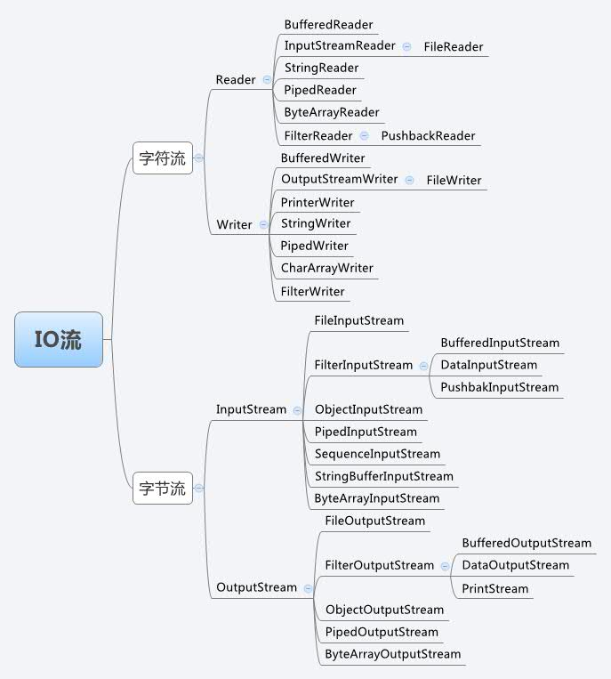

Java IO 相关的类和接口
| 类 | 说明 |
|---|---|
| File | 文件类 |
| RandomAccessFile | 随机存取文件类 |
| InputStream | 字节输入流 |
| OutputStream | 字节输出流 |
| Reader | 字符输入流 |
| Writer | 字符输出流 |
Java 流类图结构

IO 原理
File
java.io.File 是文件和目录路径名的抽象表示形式，File 能新建、删除、重命名文件和目录，但 File 不能访问文件内容本身。如果需要访问文件内容本身，则需要使用输入/输出流。
File 对象可以作为参数传递给流的构造函数
File 的静态属性 String separator 存储了当前系统的路径分隔符，在 UNIX 中，此字段为’/‘，在 Windows 中，为’\‘；
File 方法：
| 访问文件名 | 文件检测 | 获取文件信息 | 文件操作 | 目录操作 |
|---|---|---|---|---|
| String getName() | boolean exists() | long lastModified() | boolean createNewFile() | boolean mkdir() |
| String getPath() | boolean canRead() | long length() | boolean delete() | boolean mkdirs() |
| String getAbsoluteFile() | boolean canWrite() | String[] list() | ||
| String getAbsolutePath() | boolean isFile() | File[] listFiles() | ||
| String getParent | boolean isDirectory() | |||
| boolean renameTo(File file) |
流
流是一组有顺序的，有起点和终点的字节集合，是对数据传输的总称或抽象。即数据在两设备间的传输称为流，流的本质是数据传输，根据数据传输特性将流抽象为各种类，方便更直观的进行数据操作
流的分类
根据处理数据类型的不同分为：字符流和字节流
| 输入流 | 输出流 |
|---|---|
| InputStream | OutputStream |
字符流的由来： 因为数据编码的不同，而有了对字符进行高效操作的流对象。本质其实就是基于字节流读取时，去查了指定的码表。
| 输入流 | 输出流 |
|---|---|
| Reader | Writer |
字节流和字符流的区别：
- 读写单位不同：字节流以 byte（8bit）为单位，字符流以 char（16bit 为单位，根据码表映射字符，一次可能读多个字节。
- 处理对象不同：字节流能处理所有类型的数据（如图片、avi 等），而字符流只能处理字符类型的数据。
结论：只要是处理纯文本数据，就优先考虑使用字符流。 除此之外都使用字节流。
根据数据流向不同分为：输入流和输出流
对输入流只能进行读操作，对输出流只能进行写操作，程序中需要根据待传输数据的不同特性而使用不同的流
IO 流体系
| 分类 | 字节输入流 | 字节输出流 | 字符输入流 | 字符输出流 |
|---|---|---|---|---|
| 抽象基类 | InputStream | OutputStream | Reader | Writer |
| 文件 | FileInputStream | FileOutputStream | FileReader | FileWriter |
| 数组 | ByteArrayInputStream | ByteArrayOutputStream | CharArrayReader | CharArrayWriter |
| 管道 | PipedInputStream | PipedOutputStream | PipedReader | PipedWriter |
| 字符串 | StringReader | StringWriter | ||
| 缓冲流 | BufferedInputStream | BufferedOutputStream | BufferedReader | BufferedWriter |
| 转换流 | InputStreamReader | OutputStreamWriter | ||
| 对象流 | ObjectInputStream | ObjectOutputStream | ||
| 过滤流 | FilterInputStream | FilterOutputStream | FilterReader | FilterWriter |
| 打印流 | PrintStream | PrintWriter | ||
| 推回输入流 | PushbackInputStream | PushbackReader | ||
| 特殊流 | DataInputStream | DataOutputStream |
InputStream & Reader
- InputStream 和 Reader 是所有输入流的基类。
- InputStream（典型实现：FileInputStream
- int read()
- int read(byte[] b)
- int read(byte[] b, int off, int len)
- Reader（典型实现：FileReader）
- int read()
- int read(char [] c)
- int read(char [] c, int off, int len)
- 程序中打开的文件 IO 资源不属于内存里的资源，垃圾回收机制无法回收该资源，所以应该显式关闭文件 IO 资源。
OutputStream & Writer
- OutputStream 和 Writer 也非常相似：
- void write(int b/int c);
- void write(byte[] b/char[] cbuf);
- void write(byte[] b/char[] buff, int off, int len);
- void flush();
- void close(); 需要先刷新，再关闭此流
- 因为字符流直接以字符作为操作单位，所以 Writer 可以用字符串来替换字符数组，即以 String 对象作为参数
- void write(String str);
- void write(String str, int off, int len);
文件流
读取文件
1）建立一个流对象，将已存在的一个文件加载进流。
2）创建一个临时存放数据的数组。
3）调用流对象的读取方法将流中的数据读入到数组中。
import java.io.File;
import java.io.FileInputStream;
public class FileInput {
public static void main(String[] args) throws Exception {
FileInputStream inputStream = new FileInputStream(new File("E:" + File.separator + "package-lock.json"));
byte[] array = new byte[20];
try {
while(inputStream.read(array) != -1) {
System.out.println(new String(array));
}
} catch (Exception e) {
e.printStackTrace();
} finally {
try {
if (inputStream != null) {
inputStream.close();
}
} catch (Exception e) {
e.printStackTrace();
}
}
}
}
缓冲流
为了提高数据读写的速度，Java API 提供了带缓冲功能的流类，在使用这些流类时，会创建一个内部缓冲区数组
根据数据操作单位可以把缓冲流分为：
- BufferedInputStream 和 BufferedOutputStream
- BufferedReader 和 BufferedWriter
缓冲流要”套接”在相应的节点流之上，对读写的数据提供了缓冲的功能，提高了读写的效率，同时增加了一些新的方法
对于输出的缓冲流，写出的数据会先在内存中缓存，使用 flush()将会使内存中的数据立刻写出
import java.io.*;
public class BufferTest {
public static void main(String[] args) {
BufferedReader bufferedReader = null;
BufferedWriter bufferedWriter = null;
try {
bufferedReader = new BufferedReader(new FileReader("E:" + File.separator + "1.txt"));
bufferedWriter = new BufferedWriter(new FileWriter("E:" + File.separator + "2.txt"));
String line = null;
while ((line = bufferedReader.readLine()) != null) {
bufferedWriter.write(line);
bufferedWriter.newLine();
}
bufferedWriter.flush();
} catch (IOException e) {
e.printStackTrace();
} finally {
try {
if (bufferedWriter != null) {
bufferedWriter.close();
}
} catch (IOException e) {
e.printStackTrace();
}
try {
if (bufferedReader != null) {
bufferedReader.close();
}
} catch (IOException e) {
e.printStackTrace();
}
}
}
}
转换流
转换流提供了在字节流和字符流之间的转换，java 有 2 个转换流：
- InputStreamReader
- OutputStreamWriter
字节流中的数据都是字符时，转成字符流操作更高效。
InputStreamReader
用于将字节流中读取到的字节按指定字符集解码成字符。需要和 InputStream”套接”。
OutputStreamWriter
用于将要写入到字节流中的字符按指定字符集编码成字节。需要和 OutputStream”套接”。
字符编码
常见的编码表
ASCII：用一个字节的 7 位可以表示
ISO8859-1：用一个字节的 8 位表示
GB2312：中国的中文编码表
GBK：中国的中文编码表升级，融合了更多的中文文字符号
Unicode：所有文字都用两个字节来表示,Java 语言使用的就是 unicode
UTF-8：最多用三个字节来表示一个字符
编码：字符串->字节数组
解码：字节数->字符串
import java.io.*;
public class StreamReader {
public static void main(String[] args) throws Exception{
FileInputStream inputStream = new FileInputStream("E:" + File.separator + "1.txt");
FileOutputStream outputStream = new FileOutputStream("E:" + File.separator + "2.txt");
InputStreamReader inputStreamReader = new InputStreamReader(inputStream, "UTF-8");
OutputStreamWriter outputStreamWriter = new OutputStreamWriter(outputStream, "UTF-8");
BufferedReader bufferedReader = new BufferedReader(inputStreamReader);
BufferedWriter bufferedWriter = new BufferedWriter(outputStreamWriter);
String line = null;
while ((line = bufferedReader.readLine()) != null) {
bufferedWriter.write(line);
bufferedWriter.newLine();
bufferedWriter.flush();
}
try {
bufferedReader.close();
bufferedWriter.close();
} catch (Exception e) {
e.printStackTrace();
}
}
}
标准输入输出流
System.in 和 System.out 分别代表了系统标准的输入和输出设备，默认输入设备是键盘，输出设备是显示器
System.in 的类型是 InputStream
System.out 的类型是 PrintStream，其是 OutputStream 的子类 FilterOutputStream 的子类
通过 System 类的 setIn，setOut 方法对默认设备进行改变。
public static void setIn([InputStream] in)
public static void setOut([PrintStream] out)
import java.io.BufferedReader;
import java.io.IOException;
import java.io.InputStreamReader;
public class SystemInOut {
public static void main(String[] args) {
BufferedReader reader = new BufferedReader(new InputStreamReader(System.in));
String line = null;
try {
while ((line = reader.readLine()) != null) {
if ("quit".equals(line)) {
break;
}
System.out.println(line);
}
} catch (IOException e) {
e.printStackTrace();
} finally {
if (reader != null) {
try {
reader.close();
} catch (IOException e) {
e.printStackTrace();
}
}
}
}
}
打印流
在整个 IO 包中，打印流是输出信息最方便的类。
PrintStream(字节打印流)和 PrintWriter(字符打印流)提供了一系列重载的 print 和 println 方法，用于多种数据类型的输出
PrintStream 和 PrintWriter 的输出不会抛出异常
PrintStream 和 PrintWriter 有自动 flush 功能
System.out 返回的是 PrintStream 的实例
import java.io.*;
public class Print {
public static void main(String[] args) {
FileOutputStream outputStream = null;
PrintStream printStream = null;
try {
outputStream = new FileOutputStream(new File("E:" + File.separator + "1.txt"));
printStream = new PrintStream(outputStream, true);
if (printStream != null) {
System.setOut(printStream);
}
System.out.println("aaaaaa");
} catch (Exception e) {
e.printStackTrace();
} finally {
printStream.close();
try {
outputStream.close();
} catch (IOException e1) {
e1.printStackTrace();
}
}
}
}
数据流
操作 Java 语言的基本数据类型的数据，可以使用数据流。
数据流有两个类：(用于读取和写出基本数据类型的数据）
DataInputStream 和 DataOutputStream
分别”套接”在 InputStream 和 OutputStream 节点流上
import java.io.DataOutputStream;
import java.io.File;
import java.io.FileOutputStream;
import java.io.IOException;
public class DataInOut {
public static void main(String[] args) {
DataOutputStream dataOutputStream = null;
try {
dataOutputStream = new DataOutputStream(new FileOutputStream("E" + File.separator + "2.txt"));
dataOutputStream.writeUTF("xxxxxxx");
dataOutputStream.writeBoolean(true);
dataOutputStream.writeChar(12);
} catch (Exception e) {
e.printStackTrace();
} finally {
try {
dataOutputStream.close();
} catch (IOException e) {
e.printStackTrace();
}
}
}
}
对象流
ObjectInputStream 和 OjbectOutputSteam：用于存储和读取对象的处理流。可以把 java 对象写入到数据源中，也能把对象从数据源中还原回来。
序列化(Serialize)：用 ObjectOutputStream 类将一个 Java 对象写入 IO 流中
反序列化(Deserialize)：用 ObjectInputStream 类从 IO 流中恢复该 Java 对象
ObjectOutputStream 和 ObjectInputStream 不能序列化 static 和 transient 修饰的成员变量
对象的序列化
对象序列化机制允许把内存中的 Java 对象转换成平台无关的二进制流，把二进制流持久地保存在磁盘上，或通过网络将这种二进制流传输到另一个网络节点。当其它程序获取了这种二进制流，就可以恢复成原来的 Java 对象
序列化可将任何实现了 Serializable 接口的对象转化为字节数据，使其在保存和传输时可被还原
序列化是 RMI（Remote Method Invoke – 远程方法调用）过程的参数和返回值都必须实现的机制，而 RMI 是 JavaEE 的基础。因此序列化机制是 JavaEE 平台的基础
如果需要让某个对象支持序列化机制，则必须让其类是可序列化的，为了让某个类是可序列化的，该类必须实现如下两个接口之一：
Serializable
Externalizable
凡是实现 Serializable 接口的类都有一个表示序列化版本标识符的静态变量：
private static final long serialVersionUID;
serialVersionUID 用来表明类的不同版本间的兼容性
如果类没有显示定义这个静态变量，它的值是 Java 运行时环境根据类的内部细节自动生成的。若类的源代码作了修改，serialVersionUID 可能发生变化。
定义 serialVersionUID 的用途
希望类的不同版本对序列化兼容，因此需确保类的不同版本具有相同的 serialVersionUID
不希望类的不同版本对序列化兼容，因此需确保类的不同版本具有不同的 serialVersionUID
使用对象流序列化对象
若某个类实现了 Serializable 接口，该类的对象就是可序列化的：
创建一个 ObjectOutputStream
调用 ObjectOutputStream 对象的 writeObject(对象) 方法输出可序列化对象。注意写出一次，操作 flush()
反序列化
创建一个 ObjectInputStream
调用 readObject() 方法读取流中的对象
强调：如果某个类的字段不是基本数据类型或 String 类型，而是另一个引用类型，那么这个引用类型必须是可序列化的，否则拥有该类型的 Field 的类也不能序列化
import java.io.Serializable;
public class User implements Serializable {
private String name;
private int age;
public String getName() {
return name;
}
public void setName(String name) {
this.name = name;
}
public int getAge() {
return age;
}
public void setAge(int age) {
this.age = age;
}
@Override
public String toString() {
return "User{" +
"name='" + name + '\'' +
", age=" + age +
'}';
}
}
import java.io.*;
public class ObjectReadWrite {
public static void main(String[] args) {
ObjectInputStream inputStream = null;
ObjectOutputStream outputStream = null;
User user = new User();
user.setName("user");
user.setAge(20);
try {
outputStream = new ObjectOutputStream(new FileOutputStream("E:" + File.separator + "user.txt"));
outputStream.writeObject(user);
outputStream.flush();
outputStream.close();
inputStream = new ObjectInputStream(new FileInputStream("E:" + File.separator + "user.txt"));
User user1 = (User) inputStream.readObject();
System.out.println(user1);;
} catch (Exception e) {
e.printStackTrace();
}
}
}
RandomAccessFile 类
RandomAccessFile 类支持 “随机访问” 的方式，程序可以直接跳到文件的任意地方来读、写文件
支持只访问文件的部分内容
可以向已存在的文件后追加内容
RandomAccessFile 对象包含一个记录指针，用以标示当前读写处的位置。RandomAccessFile 类对象可以自由移动记录指针：
long getFilePointer()：获取文件记录指针的当前位置
void seek(long pos)：将文件记录指针定位到 pos 位置
创建 RandomAccessFile 类实例需要指定一个 mode 参数，该参数指定 RandomAccessFile 的访问模式：
r: 以只读方式打开
rw：打开以便读取和写入
rwd:打开以便读取和写入，同步文件内容的更新
rws:打开以便读取和写入，同步文件内容和元数据的更新
import java.io.File;
import java.io.IOException;
import java.io.RandomAccessFile;
public class RandomAccessFileTest {
public static void main(String[] args) {
write();
read();
}
public static void read() {
try {
RandomAccessFile randomAccessFile = new RandomAccessFile("E:" + File.separator + "1.txt", "r");
randomAccessFile.seek(10);
byte[] array = new byte[10];
int offset = 0;
int length = 7;
randomAccessFile.read(array, offset, length);
System.out.println(new String(array));
randomAccessFile.close();
} catch (IOException e) {
e.printStackTrace();
}
}
public static void write() {
try {
RandomAccessFile randomAccessFile = new RandomAccessFile("E:" + File.separator + "1.txt", "rw");
randomAccessFile.seek(7);
String line = randomAccessFile.readLine();
randomAccessFile.seek(6);
randomAccessFile.write("iiiiiiiii".getBytes());
randomAccessFile.write(line.getBytes());
randomAccessFile.close();
} catch (Exception e) {
e.printStackTrace();
}
}
}
总结
字节流->缓冲流
输入流：InputStream->FileInputStream->BufferedInputStream
输出流：OutputStream->FileOutputStream->BufferedOutputStream
字符流->缓冲流
输入流：Reader->FileReader->BufferedReader
输出流：Writer->FileWriter->BufferedWriter
转换流
InputSteamReader 和 OutputStreamWriter
对象流
ObjectInputStream 和 ObjectOutputStream
序列化
反序列化